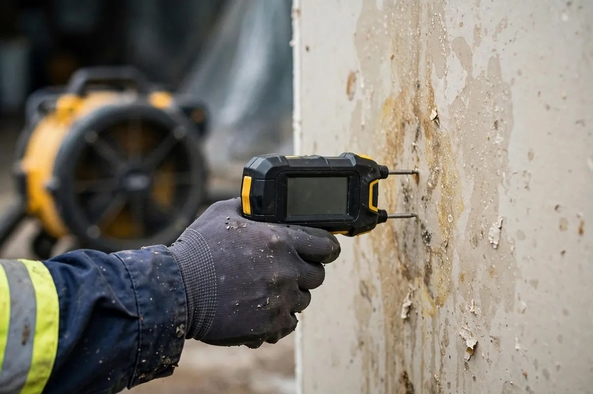

Structural Drying in Hollywood, FL
Drying a building isn't about pointing fans at wet spots and hoping — it's a measured process with a finish line defined by numbers. Structural drying uses calculated airflow, commercial dehumidification, and daily moisture readings to pull water out of framing, drywall, subfloors, and cavities until each material reaches its dry standard. Done right, it's what stands between a water event and a mold problem three weeks later.

Understanding Structural Drying in Hollywood
Here's what most people get wrong about drying: surfaces lie. Drywall can feel dry to the touch while the cavity behind it is still saturated. Tile looks fine while the subfloor underneath holds gallons. Wood framing dries from the outside in, so the surface normalizes days before the core does. Without instruments, "looks dry" is a guess — and in Hollywood's humid air, where ambient moisture already slows evaporation, guessing is how hidden mold colonies get their start.
Real structural drying works on simple physics: warm, dry, moving air absorbs moisture, and dehumidifiers strip that moisture back out of the air so the cycle continues. Equipment placement follows the moisture map, not intuition — air movers angled along wet walls, dehumidifiers sized to the cubic footage and saturation level. Every day, readings are taken and logged; equipment gets repositioned or removed based on what the numbers say. The job ends when materials verify at their dry standard, not when a calendar says so.
How We Handle the Job
Drying starts from the moisture map: baseline readings for every affected material, with dry reference readings from untouched areas for comparison. Air movers go in first, positioned to create airflow across wet surfaces and into cavities; dehumidifiers follow, sized to the space and the moisture load. Then comes the disciplined part — daily monitoring visits where every point is re-read, equipment is adjusted or pulled as zones dry, and the log grows. When the last reading hits its target, the equipment comes out and final verification readings close the file.
You'll see the readings yourself if you want — the daily log is straightforward and we explain what each number means. Structural drying usually follows emergency water extraction, and on larger losses it runs alongside flood cleanup work, with moisture mapping guiding equipment placement throughout.
Local Response and Insurance Support
Searching for structural drying near me usually means you need help without delay. We answer emergency calls around the clock. Documentation — photos and moisture readings — supports conversations with your insurance carrier when the loss is sudden and accidental. We do not decide coverage; we provide clear technical information about the work performed.
When to Call
Call if you have active water, wet materials that are not drying, odors after a leak, or a backup that may involve contaminated water. Early action in Hollywood’s climate is almost always less disruptive than waiting. For neighborhood-specific service, see our service areas. Many of these calls come in as emergency drying services in Hollywood — the sooner drying starts after extraction, the more material can be saved.
Frequently Asked Questions
How long does structural drying take?
It varies with the materials, how saturated they are, and ambient conditions — often several days for a typical residential loss. We dry to meter-verified readings rather than a fixed schedule, so the timeline follows the moisture, not the calendar.
Can't I just run my own fans and open windows?
Household fans move air but don't dehumidify, and in Florida's humidity, open windows can actually feed moisture back into the materials. Worse, fans alone give you no readings — you'd never know when the wall cavity was actually dry.
Will the drying process damage my walls or floors?
Controlled drying protects materials; it's prolonged moisture that causes the real damage — warping, swelling, delamination. The equipment is placed and monitored to dry things, not to blast them.
How do you know when something is truly dry?
Moisture meters, compared against dry standards for each specific material and verified with readings from unaffected areas. Those numbers are logged daily and form the proof the job is complete.